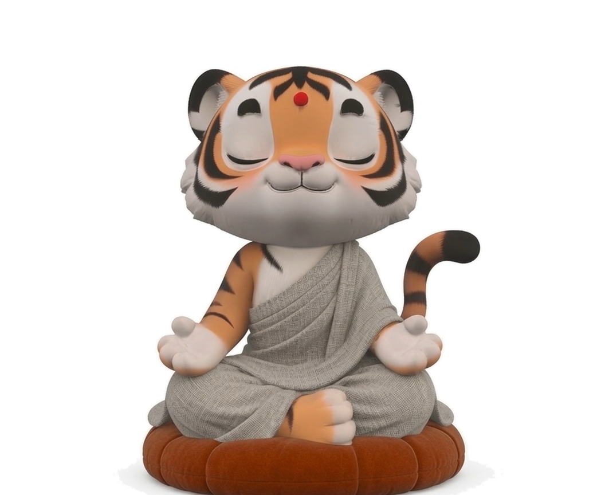

v6 product stage — cushion-orange Sit · roomier copy · idle frame. Real app: /?product=1
/?product=1
Here & Now
This seat is enough. Yin’s breath is company.
Offline Space
You may sit elsewhere. This page keeps time; Yin does not ask.
Flow State
The window may rest. Move among your tools; Yin remains.
--color-panel · controls
Track / chip chrome
Not for long copy
--color-surface-warm · copy cards
Primary: you’ve returned to sit with Yin.
Secondary: a quiet hint · just now